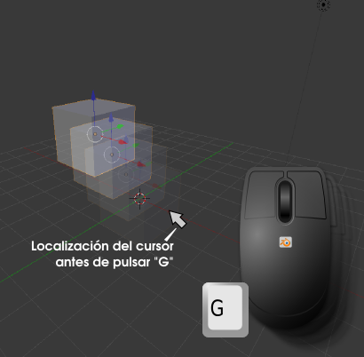
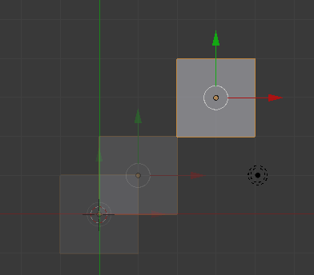
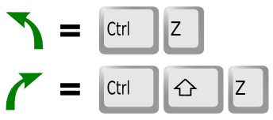
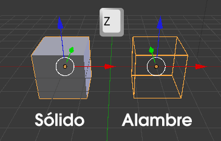

Mover
Para desplazar un objeto basta con usar el atajo de teclado "G" para que comience la edición; después movemos el ratón para buscar la nueva localización y rematamos la operación con clic izquierdo o "Intro". El aprendiz suele obcecarse en mantener pulsada la tecla durante la edición pero, no sólo no es necesario, sino que interfiere en la operación al no permitir completarla con el clic izquierdo.
Antes de hacer esta transformación siempre se da el mismo consejo: a la hora de pulsar "G", el cursor del ratón debe estar colocado cerca del lugar donde comienza el objeto a moverse.
Hay una serie de utilidades imprescindibles
- "Esc". Anula la transformación en curso. Esto es algo común a todas las ediciones.
- Si mientras movemos el ratón pulsamos la tecla "Control", los desplazamientos se hacen a saltos de una unidad determinada por la rejilla. La mejor manera de comprobarlo es en vista superior ("NumPad 7") y ortográfica ("NumPad 5" si esta en cónica).

- Es posible sustituir el movimiento del ratón por el uso de los cursores del teclado.
- Se puede restringir el movimiento a uno de los ejes pulsando la tecla correspondiente después de la "G"; por ejemplo, si queremos restringir el movimiento al eje Z haremos "G" después "Z" y continuamos con la edición. Esto no es muy necesario desde que se incorporó el Manipulador 3D, que estudiaremos más adelante, pero es muy cómodo cuando el desplazamiento se desea en el eje Local.
- "Control_Z". Como en la gran mayoría de los software sirve para deshacer la última operación. "Control_Shift_Z" rehace la última operación. Estas dos órdenes son válidas para cualquier edición.

Posible situación extraña...
El objeto que íbamos a mover se ha volatilizado
Eso es muy habitual por la proximidad de las teclas "G" y "H". Es más que probable que hayamos pulsado esta segunda tecla que implica que el objeto seleccionado se oculte. Para hacer visibles los objetos ocultos usamos el menú Objeto/Mostrar-Esconder (o "Alt H").
El aspecto sólido del objeto se ha cambiado por una representación a base de líneas
Hemos pulsado "Z" y se ha cambiado el modo de representación en el editor Vista 3D. Estábamos en sombreado Sólido y se ha cambiado a Alambre. Para regresar a Sólido basta con volver a pulsar "Z".
